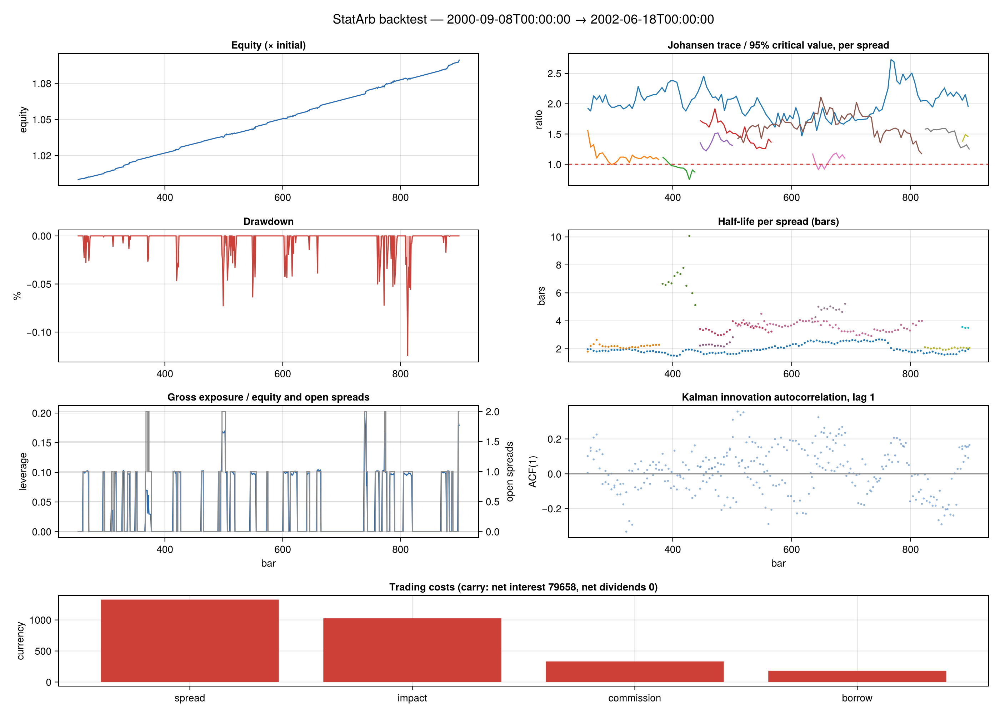
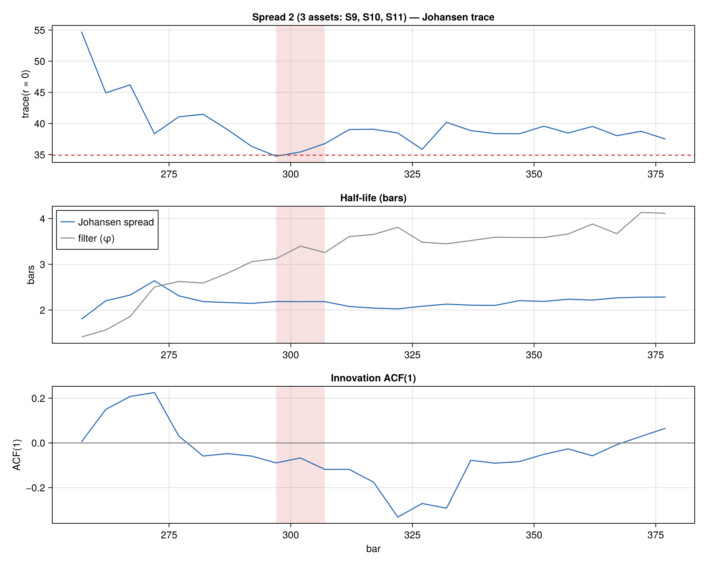
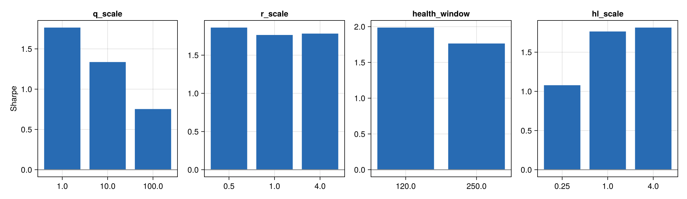

Plotting and exporting results
Plots
Load a Makie backend and the plotting extension activates. CairoMakie gives static images, while GLMakie and WGLMakie are interactive.
using StatArb, CairoMakie, Random
panel, _ = synthetic_universe(Xoshiro(3); n_pairs = 4, n_baskets = 2, n_noise = 6, T = 900)
res = run_backtest(panel, BacktestConfig(max_baskets = 2))
plot_backtest(res)
The dashboard shows:
- Left: equity, drawdown, and gross exposure with the number of open spreads (margin calls appear as dashed lines).
- Right: model health. Each spread's Johansen trace divided by its own 95% critical value (above 1 means the rolling window still rejects "no cointegration"), half-lives, and the Kalman innovation autocorrelation.
- Bottom: trading costs, with carry (interest and dividends) in the title.
One spread's health timeline, with quarantine periods shaded:
basket = first(res.health.pair[res.health.k .== 3])
plot_health(res, basket)
And a sensitivity sweep:
sw = sensitivity_sweep(panel; q_scales = (1.0, 10.0, 100.0), r_scales = (0.5, 1.0, 4.0),
windows = (120, 250), hl_scales = (0.25, 1.0, 4.0))
plot_sweep(sw)
Exporting
export_results writes the equity curve, the bar, health, fill and formation logs, and a performance summary. The output is CSV by default, with no extra dependencies, or Arrow with format = :arrow after using Arrow:
dir = mktempdir()
basename.(export_results(dir, res))6-element Vector{String}:
"equity.csv"
"bars.csv"
"health.csv"
"fills.csv"
"formations.csv"
"summary.csv"first(readlines(joinpath(dir, "fills.csv")), 3)3-element Vector{String}:
"t,submit_t,ticket,pair,leg,asse" ⋯ 48 bytes ⋯ "cost,commission,passive,legged"
"261,260,1,2,1,9,-225.0,188.8264" ⋯ 84 bytes ⋯ ",2.124297149382936,false,false"
"261,260,1,2,2,10,837.0,54.21190" ⋯ 82 bytes ⋯ ",2.268768021086199,false,false"result_tables returns the same tables as NamedTuples of vectors, ready for DataFrames, CSV.jl or any other Tables.jl sink.